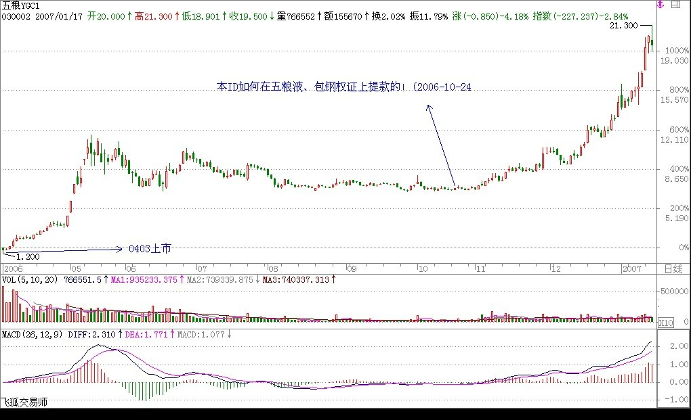
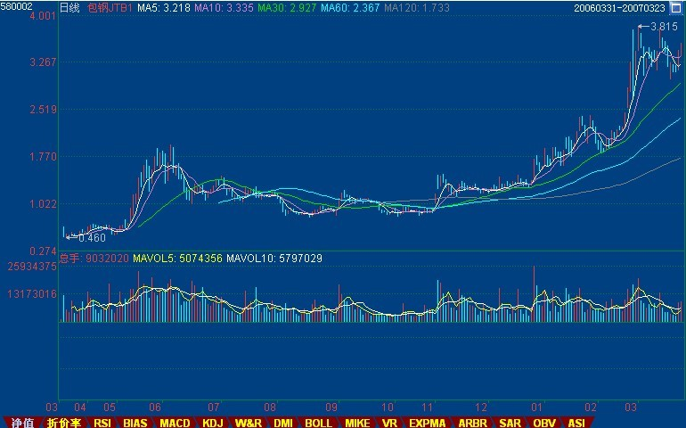
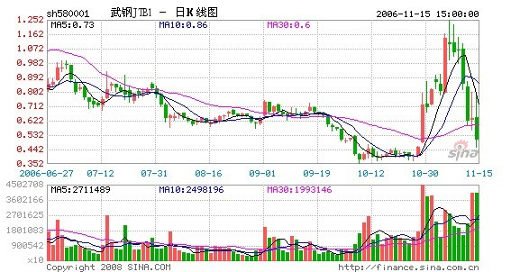

教你炒股票6：本ID如何在五粮液、包钢权证上提款的！
(2006-10-24 12:45:16)
最近忙着和孔二爷闹，满博客都是孔二爷，前两天耍了一下鲁超女活跃一下气氛，今天想继续说说这“教你炒股票”系列。总不能整天都是孔二爷，也要照顾一下孔方兄，都是姓孔的，一碗水要端平。
股票上永远不缺英雄，更永远不缺死去的英雄，最近的英雄们都又在吹投资，但投资这内裤永远掩盖不了股票扒光后赤裸裸的投机。阴符云：“ 天性，人也；人心，机也；立天之道以定人也。天发杀机，斗转星移；地发杀机，龙蛇起陆；人发杀机，天地反覆；天人合发，万化定基。”不投这个机，又如何夺天地之造化？股票市场也是一样的。
对于本ID来说，这股票市场就如同提款机，时机到了，就去提款，时机不到，就让他搁在那。市场就如同男人，整天管他就会犯贱，就会咬你。所以男人不能经常搞，这市场也一样，必须耐心等待他的骚动，他不骚动，是不能搞的。本ID曾写帖子“G股是G点，大牛不用套！”，连G点都不明白，是没资格谈论股票的。
如同要找到男人的G点，就要对这男人充分了解，要找到这市场的G点，其道理是一样的。但就像光知道男人有G点还是不能乱搞，首先要了解他是干净的，是安全的，否则高潮还没有就翘了，那不麻烦大了？这市场也是一样的，不是什么机会、G点都要搞的，首先的前提要安全，要像去银行提款一样安全。就像又有G点又干净的男人才值得搞，市场上也只有这样又安全又能G点的机会，才值得投机。
就像四月份时本ID在五粮液、包钢认购权证上的布局。为什么选择他们而不是其他，道理很简单，因为他们既有认购又有认沽，而对于企业来说，除非行情特别不好，否则是不会让认沽兑现的，因为不兑现，这就是一个空头支票，而兑现是要掏真金白银的。因此，对既有认购又有认沽的认购权证来说，认沽和认购的行权价之间的差价，就是认购权证最安全的底线。对于五粮液、包钢认购权证，这个底线就分别是1.02和0.43元。而本ID当时分别在1元多和4毛多吃他们，是不是和去银行提款一样安全？唯一遗憾的是，他们的盘子都太小，属于小男人的类型，容纳不了太大的资金。小男人，没什么劲；小盘的股票，也一样。
投机不是瞎搞，是要清清楚楚地搞。要清清楚楚，就要对市场充分地理解，要明白其道道。本ID曾发明了一个口号在私下流传，就是“像搞男人一样搞股票，像做爱一样做股票。”不明白这，没资格谈论股票。关于这个话题，今天就到这，有时间、有心情，继续。


=====================================================================
回复：
缠中说缠
2006-11-22
10:58:10
多谢大侠指教。我就是那个冰火。我大概明白你的意思了，假如Y是认沽行权价，X是认购行权价，那企业为了自己的利益会尽量保证行权当天的股价不低于Y，所以认购权证的最终价格会不低于Y-X，所以只要认购权证的价格跌到（Y-X）以下的区间内，都是比较安全的。是这个意思吗？
============================================================================
不一定要跌到那区间，基本就不会跌到那区间，在上面高点的位置就可以了，那是一个底线，基本不会跌破。所以你就有了一个几乎绝对安全的标准。像最近的武钢，几乎绝对安全线在0.21元，在0.35元见到底部。等于你用最多30%的风险去赌300%的利润，这样当然可以介入了。

================================
附录
权证简介：
认购权证是股票衍生性金融商品，发行人发行一定数量、特定条件的有价证券，投资者付出权利金持有该权证后，有权在某一特定期间（美式权证）或特定时点（欧式权证），按一定的履约价格，向发行人买进一定数量之标的股票.
认沽权证即认售权证，就是看跌期权，具体地说，就是在行权的日子，持有认沽权证的投资者可以按照约定的价格卖出相应的股票给上市公司。
认购权证持有人有权按约定价格在特定期限内或到期日向发行人买入标的证券，认沽权证持有人则有权卖出标的证券。
认购权证的. 价值随相关资产价格上升而上升，认沽权证则随相关资产价格下降而上升。 |